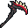
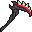
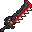
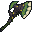
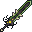
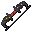
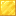
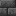
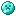

Bienvenue sur ZinzinLand
Essence d'âme
La matière première du pouvoir des âmes. Elle ne tombe que d'une façon bien précise.
Comment l'obtenir ?
Tue un mort-vivant (zombie, squelette, noyé, wither squelette…)
en tenant une arme des Âmes en main principale (Faux, Épée, Hache, Lance ou Arc).
40 % de drop
À quoi ça sert ?
Assemble 8 Essences autour d'une bouteille en verre pour distiller
une Fiole d'âmes.
Ingrédient
Sans une arme des Âmes en main, aucune essence ne tombe, même en tuant 100 zombies.
C'est l'arme qui récolte, pas toi.
Fiole d'âmes
Huit âmes condensées dans une fiole. C'est l'offrande qu'attend l'autel.
➜
La Fiole se boit (clic droit maintenu), c'est ainsi qu'on déclenche le rituel sur l'autel.
En dehors d'un autel valide, la boire ne fait rien (un message d'aide s'affiche).
⚔️ Les armes des Âmes
La Faux n'est pas seule : cinq armes des Âmes existent. Toutes font tomber des essences quand tu tues un mort-vivant en les tenant, mais elles sont maudites tant qu'elles restent en main.
Une seule recette, un seul changement
Chaque arme se fabrique avec la même grille (chair putréfiée aux angles, œil d'araignée sur les côtés). Seul l'outil au centre change et détermine l'arme obtenue.


")
➜


Faux des Âmes6 dégâts, 2.5 de vitesse. L'arme d'entrée pour récolter les âmes.
Centre : Houe en diamant

Épée des ÂmesUne lame assoiffée de chair, taillée pour le corps à corps.
Centre : Épée en diamant

Hache des ÂmesUne hache forgée dans les âmes perdues, lente mais dévastatrice.
Centre : Hache en diamant

Lance des ÂmesUne lance qui se nourrit des âmes, idéale pour garder ses distances.
Centre : Lance en diamant

Arc des ÂmesUn arc animé par les âmes damnées : il récolte aussi à distance.
Centre : Arc
Le prix du pouvoir. Tant qu'une arme des Âmes est en main, tu subis la Faim II,
ta régénération naturelle est coupée et l'arme émet des particules et des murmures.
Range-la pour te soigner tranquillement.
Il existe aussi un Arc infusé, saturé d'énergie d'âmes : il ne fait pas partie des
cinq armes récolteuses et ne fait donc pas tomber d'essences.
🔮 Autel & rituel des âmes
Le cœur du serveur : sacrifie une Fiole d'âmes sur un autel pour gagner +1 vie (jusqu'à un maximum de 3).
Construire l'autel (3×3×3)
L'autel se construit sur trois couches. Tu te tiens debout sur la table d'enchantement, au centre. Voici la structure en 3D :

Bloc d'or
Briques de deepslate Table d'enchantement Bougie noire (allumée)- Couche du dessus : 4 bougies noires aux angles (allumées)
- Couche du milieu : la table d'enchantement au centre, entourée de dalles de briques de deepslate (côtés) et de murs de briques de deepslate (angles)
- Couche du bas : un bloc d'or juste sous la table
Faire le rituel
- Construis l'autel et allume les 4 bougies (briquet).
- Monte sur la table d'enchantement, au centre de l'autel.
- Bois la Fiole d'âmes (maintiens le clic droit).
- Une séquence de sons et de particules violettes se déclenche pendant ~3 secondes.
- À la fin : +1 vie, les bougies s'éteignent et le bloc d'or se change en basalte lisse.
Si tu es déjà à 3 vies (le max), le rituel ne démarre pas et ta Fiole n'est pas consommée. Garde-la pour plus tard.
La structure de l'autel est configurable par les admins (taille, blocs, bougies) dans la config du serveur.
Vies & cœurs
Tes vies sont précieuses (max 3). Deux façons d'en regagner : le rituel de l'autel, ou un Cœur de vie.
Cœur de vie
Un consommable qui rend +1 vie dans une explosion d'effets « swag » :
foudre cosmétique, spirale violette, titre « +1 VIE », régénération et absorption.
+1 vie
🧙 Marchand des Âmes
Un PNJ qui veille sur le commerce des cœurs et des âmes. Va le voir pour échanger.
PNJ
Consulte tes vies avec la commande
/vie.🧭 Waystones
Un réseau de bornes de téléportation pour voyager vite entre tes lieux favoris, sans perles d'ender ni longues marches.
1 · Trouve ou pose une waystone
Les waystones se rencontrent dans le monde et peuvent aussi être posées
par les joueurs pour créer leurs propres points de voyage.
2 · Active-la
Fais un clic droit sur la borne pour la découvrir : elle rejoint alors
ton réseau personnel de destinations.
3 · Voyage
Reclique sur n'importe quelle waystone déjà découverte pour ouvrir le menu
et te téléporter vers une autre borne de ton réseau.
Plus tu découvres de waystones, plus ton réseau de raccourcis s'agrandit. Pense à en poser
près de ta base, des fermes et des points d'intérêt.
📍 Téléportation entre joueurs (/tpa)
Rejoins un ami où qu'il soit, avec son accord. Chaque demande expire après un court délai si personne ne répond.
| Commande | Effet |
|---|---|
/tpa <joueur> | Demande à te téléporter vers ce joueur |
/tpahere <joueur> | Demande à ce joueur de venir à toi |
/tpaccept | Accepte la demande en attente (alias /tpaccepter, /tpyes) |
/tpdeny | Refuse la demande (alias /tparefuser, /tpno) |
/tpacancel | Annule la demande que tu as envoyée (alias /tpannuler) |
Quand tu reçois une demande, un message avec les boutons [Accepter] et [Refuser]
s'affiche dans le chat : un simple clic suffit.
🏕️ Spawn
Besoin de revenir au point de départ du serveur ? Une seule commande.
| Commande | Effet |
|---|---|
/spawn | Te téléporte au spawn du serveur |
Le spawn est aussi l'endroit où tu réapparais après la mort (sauf si tu as défini un lit ou
une ancre de réapparition).
/setspawn est réservé au staff.
🪙 Monnaie
Quatre métaux servent de monnaie sur ZinzinLand, du plus commun au plus précieux.
Cuivron
La petite monnaie du quotidien.
Ferron
Un cran au-dessus du cuivron.
Aurin
Monnaie de valeur, faite d'or.

DiamantinLa monnaie la plus précieuse du serveur.
Pour consulter ton solde et gérer tes pièces, va voir Viktor le Numismate, sur le dirigeable au spawn.
🏷️ Hôtel des ventes
Un marché global intégré : mets tes objets en vente et achète ceux des autres joueurs, même hors ligne. Les prix sont en Cuivron.
| Commande | Effet |
|---|---|
/hdv | Ouvre l'hôtel des ventes (parcourir & acheter) |
/hdv vendre <prix> | Met l'objet tenu en main en vente au prix indiqué (en Cuivron) |
/hdv mesventes | Voir et gérer tes propres annonces |
/hdv recuperer | Récupère tes objets vendus / invendus dans ta boîte de retrait |
Le nombre d'annonces actives par joueur est limité. Les pièces ne se vendent pas ici :
pour l'argent, passe par la banque.
🔄 Échange direct (/trade)
Un échange sécurisé, en face à face entre deux joueurs. Chacun voit ce que l'autre propose et doit valider : fini les arnaques au jeté d'objets.
| Commande | Effet |
|---|---|
/trade <joueur> | Envoie une demande d'échange à un joueur proche |
Une fenêtre s'ouvre pour les deux joueurs : déposez vos objets, vérifiez, puis
confirmez chacun. L'échange ne se conclut que si les deux valident.
🍲 Cuisine — Crop & Kettle
Un datapack de cuisine complet (« CnK ») qui ajoute des dizaines de vrais plats cuisinés, bien au-delà des recettes vanilla.
📖 Le livre de recettes
Le livre « L'art de la cuisine » recense tous les plats. Sur
ZinzinLand, il est débloqué pour tout le monde dès le départ.
🔪 Des stations de cuisine
On prépare les plats via des postes dédiés (planche à découper, marmite…)
en combinant des ingrédients, dont les récoltes du serveur comme le Maïs.
🎁 Coffres à butin (loot par joueur)
Les coffres de structures et de donjons utilisent un système de butin personnel : chacun ouvre le sien.
Ton butin, rien qu'à toi
Quand tu ouvres un coffre à butin, tu vois ton propre contenu.
Un autre joueur qui ouvre le même coffre reçoit le sien : personne ne te vole ton loot.
Fini la course au coffre
Plus besoin de sprinter pour arriver le premier : chaque joueur a une
chance égale d'obtenir les récompenses d'une structure.
🎙️ Chat vocal
Un chat vocal de proximité : parle directement aux joueurs autour de toi, le son baissant avec la distance. Idéal pour l'ambiance et le roleplay.
🔌 Installe le mod
Le chat vocal nécessite d'installer le mod client Simple Voice Chat.
Une fois en jeu, connecte ton micro et ouvre les réglages vocaux pour choisir ta touche
« parler ».
🗣️ Proximité & groupes
Par défaut, seuls les joueurs proches t'entendent. Tu peux aussi créer des
groupes vocaux pour discuter avec tes amis, où qu'ils soient.
📘 Pas à pas pour l'installer :
guide d'installation officiel de Simple Voice Chat.
Le chat vocal est optionnel mais vivement recommandé : le serveur est bien plus vivant à la voix.
⌨️ Commandes utiles
Les commandes principales pour les joueurs.
| Commande | Effet |
|---|---|
/spawn | Retour au spawn du serveur |
/tpa <joueur> | Demander à se téléporter vers un joueur |
/tpaccept · /tpdeny | Accepter / refuser une demande de téléportation |
/hdv | Ouvrir l'hôtel des ventes |
/trade <joueur> | Proposer un échange sécurisé |
/vie | Voir tes vies |
D'autres commandes (donner des items, panel admin…) sont réservées au staff.